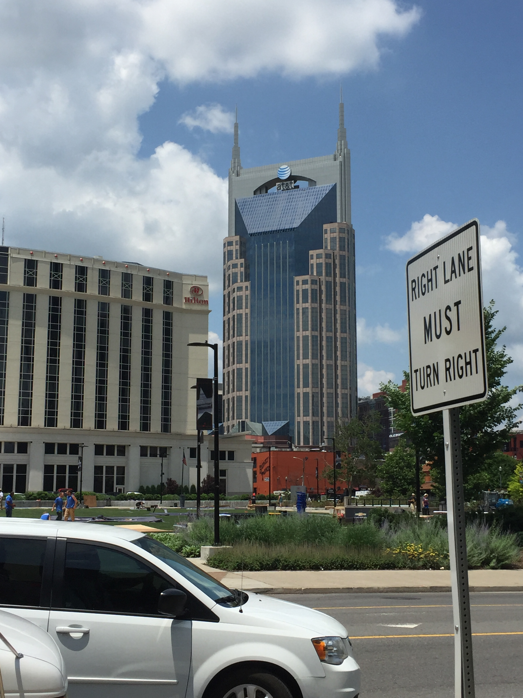

Nashville
by Tom
Our stay began rather auspiciously with a spur-of-the-moment brunch at Woolworth's, an old-timey but ellagant ballroom/modern dancing club/bar, where we had the pleasure of listening to a live pianist. He played some classic tunes, painting the perfect ambiance with effortless arpegios and fluent embellishment.
Despite our easy start, Music City didn't entail much music for us. We walked down Broadway, and expirienced some typical Nashvillian debauchery, but we never really commited to entering the myriad bars with live music. It wasn't from a lack of effort though; we walked about a mile from downtown, only to find the internet's suggested venu closed for a private event.
Determined to find some enjoyable music, we dipped into a record shop that happened be near The Listening Room Cafe (where we had hoped to go) out in the middle of no where. Much desired air-conditioning and hipster vibes, as well as an interesting DJ greeted us. But the adventure was only just begginging.